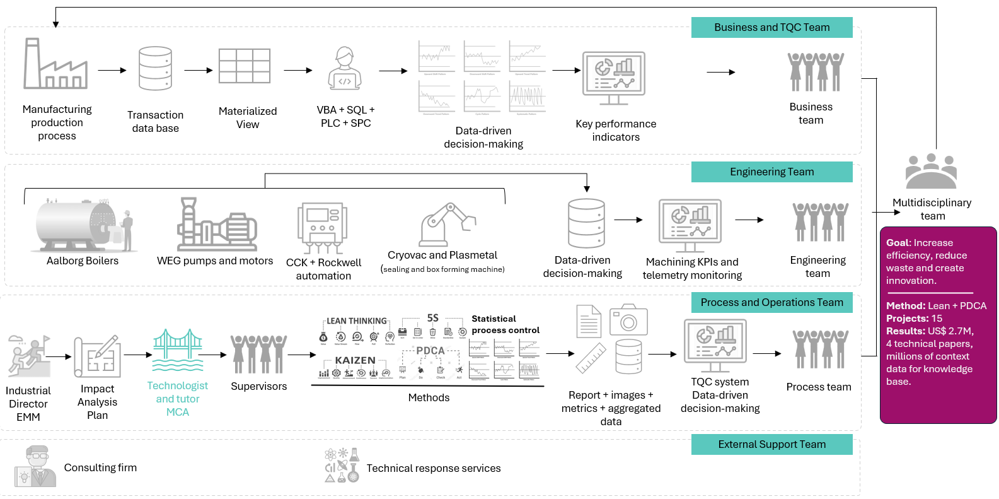
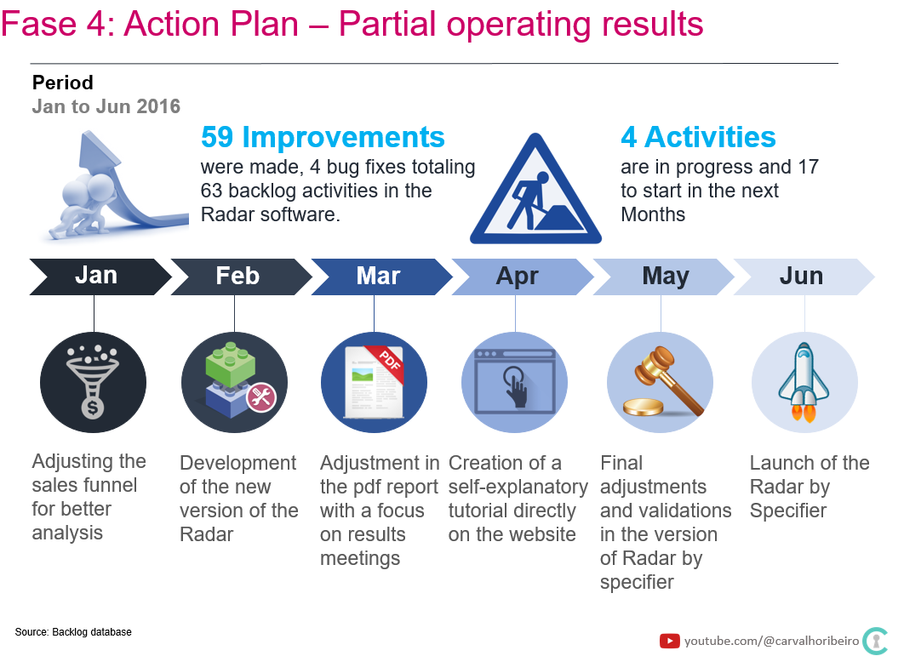

Projects
Some projects I’ve worked on
Bertin S/A (1999-2009)
Business
Bertin S/A was a meat processing company that manufactures beef-based proteins. After merging with Friboi, it became part of JBS Global, which now employs over 270,000 people worldwide.
Goals
My role involved visiting twelve manufacturing plants to identify opportunities for process improvement and implement enchancement procedures. I contributed to over fifty improvement projects across seven states, leading teams and training managers, supervisors, and production line operators in areas such as safety, computer systems, Lean manufacturing principles, the PDCA method, quality tools, strategic planning, production planning and optimization techniques.
Activities
- Designed and implemented a low-latency business intelligence system deployed across nine manufacturing plants.
- Developed an integrated planning system using linear programming to support strategic decision-making, creating a tool that helped reduce COGS(Cost of Goods Sold), which accounted for 80% of the company’s revenue.
- Trained teams of operators, supervisors, and managers in Lean manufacturing principles and business intellince tools.
- Led fifteen Kaizen projects focused on energy efficiency, production processes, slaughter, deboning, and supply chain optimization.
Accomplishments
- Reduced cost of Good Sold(COGS) by 2%, saving approximately $27 million in 2007.
- Supported the commercial team in identifying and presenting the optimal product mix.
- Improved operational performance by managing cost and driving revenue growth.
- Improved energy efficiency by reducing consumption by 10% from 90 kWh/ton to 81 kWh/ton in 2009.
- Recuded average truck loading time by 17%.
- Reduced carcass weight loss during chilling by 0.42%, saving approximately $2 million per plant in 2009.

GovBR (2011-2012)
Business
GOVBR is a private software company that develops solutions to enhance public sector management.
Goals
My role was to help increase the company’s valuation during the merger and acquisition process by establishing areas of compliance and transparency. To support this, I developed a business intelligence system that enabled managers to fine-tune their decisions using a data-driven approach.
Activities
- Mapped financial processes by collecting data on information flows, requirements, timelines, constraints, and statement communications.
- Structured the business intelligence function with a focus on controllership processes across five companies withing the business group.
- Created a new SQL Served database to store historical financial and operational data.
- Developed dashboards using QlikView to monitor performance metrics.
- Analyzed balance sheets and financial statements to identify improvement opportunities and implement changes.
Accomplishments
- Delivered a modern P&L report design to enhance clarity in key performance indicators, while ensuring the highest standards of compliance and transparency. Leveraged business intelligence tools and adopted financial reporting practices aligned with private companies standards, maintaining a structured calendar for accuracy and consistency.
- Improved communication strategies to make operational and financial results easier to present both orally and in writing.
Portobello Shop (2014-2016)
Business
Portobello Group is a premium ceramic tile manufacturer with production facilities in Tijucas, Brazil(SC), and Baxter, Tennessee(USA), employing approximately 4,000 people.
Goals
My role was to help achieve three strategic goals: opening new stores, increasing revenue in existing locations, and improving service quality for franchisees and other customers.
Activities
- Mapped internal processes, executed and monitored them, identified improvement opportunities, and implemented changes.
- Enhanced data quality and improved the user interface of Neoway Radar, a third-party big data tool used to boost external sales.
- Developed user manuals and trained support teams on new software tools.
- Supported the business intelligence team by creating performance indicators and dashboards aligned with strategic goals.
Accomplishments
- Increased the rate of new store openings from 8 to 12 per year.
- Achieved an 86% increase in external sales in 2015.
- Enhanced the company’s web portal to provide better information support for both customers and internal staff.
- Increased the number of stores using the Neoway Radar big data tool by 44%

Delta Brindes (2019-2024)
Business
Delta is a corporate gift manufacturing and distribution company that sells and ships products to over 2,000 customers across all 26 states of Brazil.
Goals
Initially, my role focused on scaling up fulfillment operations, ensuring consistently high service quality, and implementing digital systems such as enterprise resource planning(ERP) and business intelligence tools. I also mapped and documented processes to improve efficiency, and trained staff to enhance their skills and capabilities.
Subsequently, I was invited to contribute to the company’s strategic discussions, using data to refine the CEO’s decision-making. As a result, my responsabilities expanded to include:
Quickly identify macroeconomic trends and develop scenarios to protect capital, improve resource allocation efficiency, diversify investments, and optimize cash flow-ensuring the long-term sustainability of the family business.
Improve customer service for existing clients.
Gain deeper insights into where our potential customer are located and how to effectively attract them.
Boost revenue from or existing customer base.
Activities: Strategic
Developed a business intelligence platform using QlikView to integrate and analyze macroeconomic data, sales and price quotations, market sentiment, and operational performance.
Leveraged data to forecast macroeconomic and market trends, providing strategic support for the CEO’s decision-making.
Led the implementation of the ERP system, including process design and employee training.
In 2024, we redesigned, enhanced, and migrated the business intelligence system to Microsoft Power BI. We also began testing by adjusting data pipelines o meet Retrieval-Augmented Generation(RAG) requirements for task automaton using generative AI.
Activities: Operational
Handled daily operations, mapped business processes, and proposed and implemented improvements.
Documented procedures and trained teams in distribution planning, shipment coordination, customer pricing, and communication strategies to foster strong relationships wih customers and suppliers.
Accomplishments
Reduced shipping errors caused by registration issues by 98%, and cut setup time from one day to just 20 minutes.
Implemented an ERP system, Business Intelligence tools, and a new data collection and analysis framework, while also training staff.
Achieved a 150% increase in revenue between 2019 and 2022.
Delta Brindes(2024-2025)
Business
Delta is a corporate gift manufacturing and distribution company that sells and ships products to over 2,000 customers across all 26 states of Brazil.
Goals
Evaluate new business opportunities in United States and Brazil.
Analyze the strategic fit between the company business and market opportunities (What incredible benefits can we give to the customer? Where can we take the customer?)
Design and operationalize an integrated information system that combines data, strategic planning methodologies, and generatie AI tools.
Activities: Strategic
AS-IS databases were used to conduct experiments and evaluate results.
The retrieval augmented generation(RAG) process was developed to fine-tune the LLMs that will be used.
Agent spectrums(e.g., retrieval, task, autonomous), quantities and types of agents have been defined.
Documentation of successes and failures was done.
A/B tests were executed to validate the solutions using the agents.
The Knowledge base and data-driven decisions were periodically evaluated to validate the consistency of expected productivity gains and value-added product.
Activities: Operational
One assistant agent has been created to assist in customer price quotations, reducing response time.(work in progress)
One assistant agent has been created to improve the product traceability task. (work in progress)
One assistant agent has been created to process and print address labels and issue invoices. (work in progress)
Accomplishments
- Improved customer service, reducing waiting times, improving experience.
FIPE (2025-2026)
Business
São Paulo Institute of Economic Research is a Brazilian research institute focused on economic studies, market analysis, and public policy support.
Goals
As a Data Scientist, my role is to provide statistical support to improve elementary and high school education and help reverse the current low performance in key areas such as reading and math. In 2025, São Paulo accounts for 31% of Brazil’s GDP, and raising indicators like reading and math to OECD levels could generate an annual economic impact of billions of dollars, driving investment, improving quality of life, creating jobs, fostering innovation, and reducing inequality.
Activities
Analyze varaiations and identify patterns in SARESP assessment data, which measures stutends’ knowledge and skills, primarily in Portuguese language and mathematics, through standardized tests.
Contribute to the design of performance metrics, data analysis, and product formatting for stakeholders (teachers, students, principals, other decision-makers)
Design and develop student and class evaluation reports using
cohen's d, along with RAG and MCP methods powered by LLM models, and provide team training.Conduct correlation studies between class schedules and performance at student, class, school, and city levels.
Develop strategies to compare grades across terms using Item Response Theory(IRT) for tests with varying difficulty.
Design and implement item quality evaluation strategies using Classical Test Theory(CTT).
Analyze and understand variations in student performance during the transition from elementary school(grades 1-5:literacy and core curriculum) to middle school and early high school(grades 6-9: deeper learning and critical thinking)